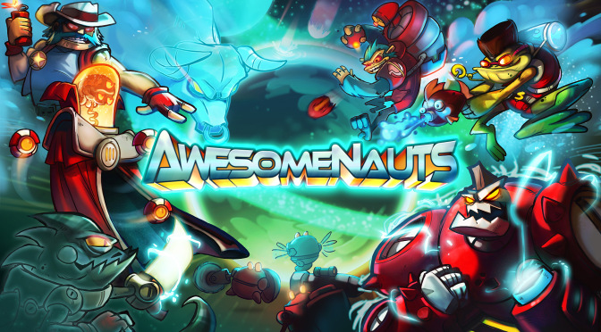
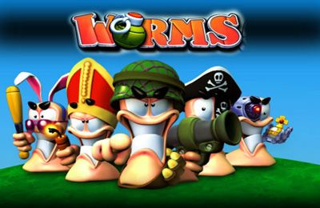
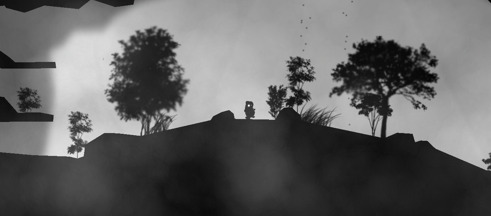
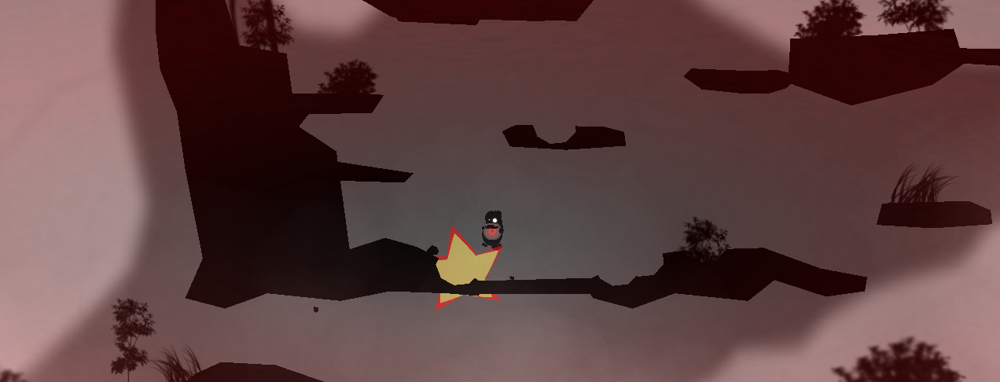
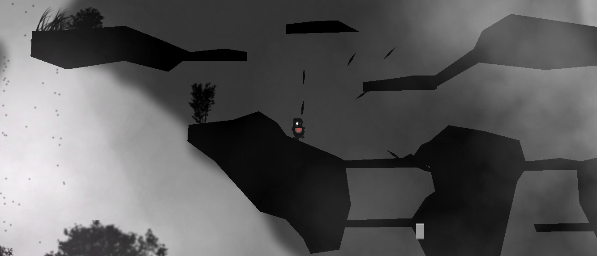
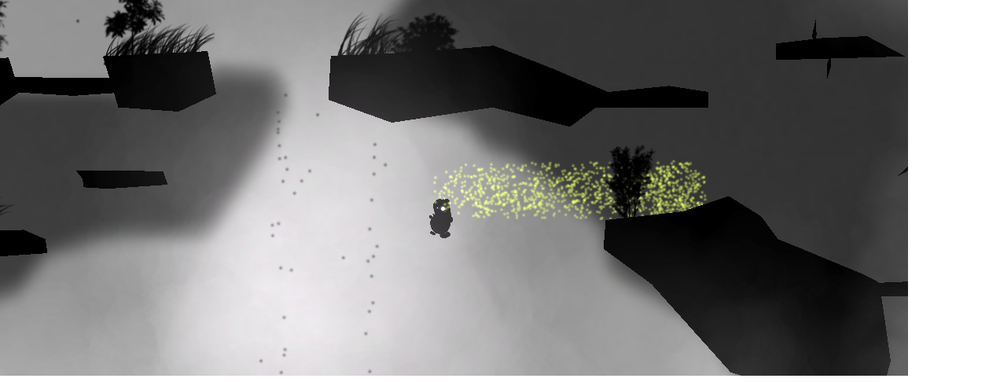

|
Final-Limbonuauts
|
|
Final-Limbonuauts
|
Project: 8-Final
Team: Limbonuauts (Kyle Cheng)
Date: December 2, 2014
The game is 2d multiplayer platformer game. I was inspired by Awesomenauts and the quick melee and shoot 2d platform action in its online multiplayer matches.
|  |
| http://www.thegamescabin.com/review-awesomenauts-possibly-best-multiplayer-game-ever/ |
I was also inspired by the destructible terrain system in the worms game series and how the levels changed over the course of the game as a result of the battle.
|  |
| http://la.cdnmob.org/iphonegame_img/worms/real/1_worms.jpg |
The player controls a wizard who can wield a variety of spells. He can shoot fireballs that blow up and destroy the environment and ice spikes and glowing balls that slow the enemy. He also has the ability to quickly “blink” between locations in the map - provided that he has a clear line of site between locations. Finally, players can also create magical barriers that block projectiles and players. All of these spells deplete your mana, which slowly regenerates over time. The goal of the game is to kill the enemy player. This can be done by pushing him off of cliffs or by killing him with your spells. Players have health that regenerates slowly over time when lowered. Vegetation and hide spots can be found in the map which allow the sneaky player to surprise his opponent.
|  |
| Start |
|  |
| Explosions |
|  |
| Example spell - spike spell |
|  |
| Example spell - blink spell |
(note this overview assumes basic familiarity with multiplayer synchronization issues, these details can be found in the powerpoint)
Unity encourages games that are built using a component-based architecture. Using this approach, we define an object’s behavior by attaching different components - scripts, colliders, rigidbodies that then define a specific objects’ attributes. This system avoids the use of restrictive hierarchies and makes each script/component independent from each other. Therefore, most of the scripts I created only encode for a specific behavior. Unity implicitly manages the general overall system (physics system, using my scripts to change an object’s behavior, visual display, etc.)
The software package involves the use of PhotonViews that synch information specified by the user every 100 ms (roughly) and RPC calls that allow for methods on one client to call methods on another client. The package provides a library for connecting players together so I did not need to worry about connecting players together.
The current system works by using linear interpolation adapted from PUN’s tutorial scripts. Player A stores the movement information from Player B’s PhotonView in a circular buffer. Movement information is only used when the information is 100 ms (or older) in the past - information received at an earlier date is ignore. The purpose of this is to ensure smooth interpolation between past locations where Player B was. If we were to interpolate Player B’s position based on the last and current states received, the movement we interpolate would be subject to fluctuations in network transmit times. By only interpolating from some old player state to its 100 ms old state (and hoping that player state doesn’t take more than 100 ms to reach us) we are able to perfectly interpolate from some old state (200 ms in the past maybe) to the 100 ms in the past state. PlayerNetwork.cs manages this behavior.
PUN’s website - I downloaded the scripts from Unity’s Asset store https://www.exitgames.com/en/PUN
Using a PhotonView to constantly synchronize a bullet’s position across both client spaces would quickly result in network overload. Instead, I used a system described in the Skynet tutorial. All clients know how to instantiate some common projectile A. In order to create a bullet in both clients the shooting client A need only call the RPC method “make projectile” in client B. Since the bullets are not being manually synched over time, we rely on PhotonNetwork.Time as a guaranteed synched time variable across all clients. The clients then simulate the bullet’s position as a function of PhotonNetwork.Time. Therefore whenever the RPC method “make projectile” is called, we pass the timestamp when that projectile was created. Using this system, clients can be authoritative for when bullets hit themselves, thereby avoiding the need for a server (we therefore have a peer to peer system). In order to allow one client to delete projectiles created in another client, each projectile is given a unique id. To delete a projectile in another client, you send the projectile id. RangedAttack.cs creates the projectiles and BaseProjectile.cs manages the actual spawned projectile.
Skynet Tutorial Links http://forum.unity3d.com/threads/new-photon-unity-networking-tutorial-series.241158/
However, a problem they did not cover was with bullet spawn - tunneling. This occurs when the synch time causes a bullet shot from client A to spawn at a much farther distance in client B’s space. This is unavoidable - we are always playing against past player states of the other clients. To avoid the inevitable tunneling issues when projectiles are shot at close range, I raycast from the start position of the bullet to its current position (based on PhotonNetwork.time), if our client character is hit by the raycast we know that lag caused the projectile to spawn past the character. We rectify this by registering a collision with the bullet.
Another problem is with view inconsistency. In the above implementation the clients are only responsible for bullet collisions with themselves, client A cannot tell client B that it was hit by A’s projectiles. This is problematic due to synch time issues. A fast moving projectile shot by A will seemingly go through A’s view of B’s position because any shot registered in client B needs to call an RPC method in client A to notify A of the explosion in the first place. I kind of cheated here and in practice this cheat works quite well. When Player A shoots a projectile it only instantiates said projectile 100 ms afterwards. However, it calls the RPC “create projectile” to the other client B. The end result is that A sees his projectile 100 ms in the past. When client B registers a hit and tells client A, it takes on average 100 ms for that information to be sent. Therefore, if client A sees his projectile 100 ms in the past, and then receives the RPC call “projectile hit” from client B, A’s view of the projectile should be at a position right at or before its view of client B’s position. Without this tweak, the projectile would have most certainly passed B’s position when B’s “projectile hit” method call arrives. I tested this tweak and noticed a significant improvement in view synchronization (seeming, as everything is fake/wrong here).
The melee system works differently. I originally tried to make a melee attack shoot a projectile with a very short lifetime but this did not work as synch time alone would mean that most projectiles would have already expired by the time their RPC create command reached the other client. Instead I opted for raycasting and made the attacking character authoritative on hits. The problem here is that the attacked player might move out of the way of a melee attack only to die because their “past version” was in the way of the other player’s sword. In practice I have never noticed this issue due to the rarity of melee attacks and the fact that most players aren’t running away when the other player melee them. MeleeAttack.cs handles this behavior.
Effects can range from slowing down a character, blinding them temporarily, pushing them back, and doing damage to their health. Having to transmit this all over the network is costly so instead a synched class (RangedAttack) takes in an abstract class “AbObjectEffect.cs” which it calls on the object its projectiles hit. Since this information is present in both clients we then only need to have an RPC method that calls DoEffect(Position, Direction).
I represent the terrain as a polygon and visualize it in the game by generating a mesh (SDestructable.cs). The destroyed terrain is synched across clients by the explosion calls. Projectiles that destroy the environment have a script “EffectObjectInArea.cs” that spawns a collider and destroys any collided objects that have the “DesEnviro” tag attached to themselves. This method is an RPC call so it is executed across all clients at the same location and rotation (hence the reason that the terrain is static and only destructible).
I represent the terrain as a polygon and visualize it in the game by generating a mesh (SDestructable.cs). The destroyed terrain is synched across clients by the explosion calls. Projectiles that destroy the environment have a script “EffectObjectInArea.cs” that spawns a collider and destroys any collided objects that have the “DesEnviro” tag attached to themselves. This method is an RPC call so it is executed across all clients at the same location and rotation (hence the reason that the terrain is static and only destructible).
▶ Play Video |
| GameplayTrailer |
▶ Play Video |
| Trailer |
Thanks to Devin, Yitong, Karen, and Michael for playtesting the game with me!
I would also like to thank the online community for the helpful articles and tutorials they provided.
Particularly Skynet for the multiplayer tutorials: http://forum.unity3d.com/threads/new-photon-unity-networking-tutorial-series.241158/
PUN for their Marco Polo Tutorial (download available on Unity Asset Store)
And some other online authors (please note this is not exhaustive) http://gafferongames.com/game-physics/fix-your-timestep/ http://answers.unity3d.com/questions/417478/best-way-to-make-a-multiplayer-physics-heavy-game.html http://joostdevblog.blogspot.com/2014/09/the-importance-of-packet-count.html
See our Development Journal .
 1.8.7
1.8.7


{kind=link}
{kind=link}
{kind=link}
{kind=link}
{kind=link}
{kind=link}